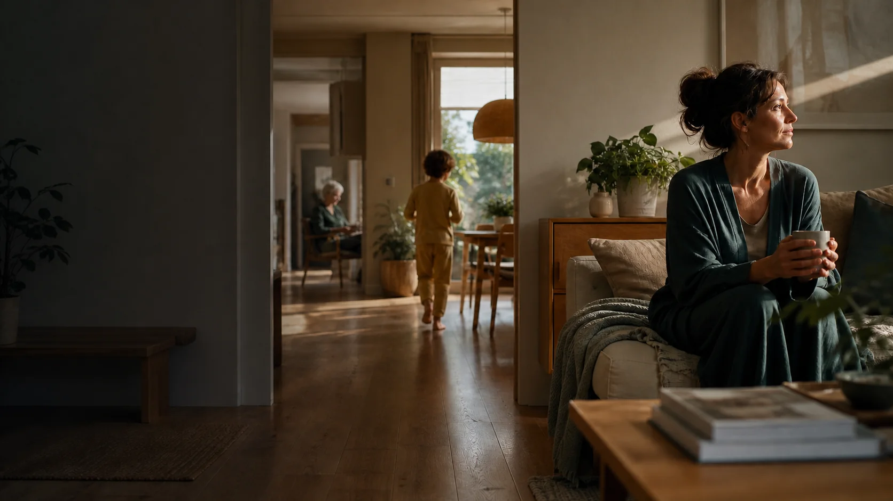

Notice with permission
Nua uses only the household context and connected devices people have deliberately chosen for a purpose.
 NuaHome
NuaHome

A home that notices with care
NuaHome brings the rhythm, needs and choices of a household into one calm intelligence—helpful before small things become heavy, quiet when it is not needed.
No hidden monitoring. Context comes only from the people, devices and permissions a household deliberately connects.
Living intelligence
NuaHome is designed to understand enough context to be genuinely useful, while staying clear about uncertainty, permission and who remains in control.
NuaNua uses only the household context and connected devices people have deliberately chosen for a purpose.
A suggestion is not a fact. Nua should show why it appeared, make uncertainty visible and let people correct it.
The goal is less mental load, not less human agency. Important care, safety and family decisions stay with people.
Four small moments
These examples show the kind of support NuaHome is designed to provide when the required feature, device and permission are connected.
Morning rhythm
Bring together selected routines, school reminders and a meal idea based on preferences the household chooses to keep.
Learning
With Lumi deliberately connected, a home reminder can lead into a learning session with parent-chosen goals, timing and encouragement.
Family coordination
Use approved plans, room controls and private messages to coordinate what still needs doing—without making every moment an automation.
Care
Household-chosen check-ins and safety routines can support an older relative or a person with additional needs. Urgent help remains a human and emergency-services decision.
One home, many forms of support
Family rhythm
Shared routines, private messages, voice requests and connected controls can work together while every person keeps an understandable role.
Children and learning
Build reading, homework, movement and screen-time rhythms with clear parent controls and deliberate Lumi hand-offs.
Food and wellbeing
Keep household meal preferences, plans and shopping intentions understandable and editable. Guidance remains practical support, not medical advice.
Care that stays human
NuaHome can give a household a permission-led view of the things its members decide matter: check-ins, connected safety devices, room messages and care routines.
It can surface something that may need attention, but it does not diagnose, replace a carer or make emergency decisions on its own.
Open care settingsPeople decide.
Nua notices, explains and supports.
Private by design
Access belongs to a named person, home and purpose. Household owners can change or remove it.
Camera, location, microphone and sharing are not silently enabled because a phone or room is linked.
Sensitive device and room context remains subject to the household's local setup and selected retention.
NuaTalks, Lumi and other Nua products receive context only through an explicit, understandable hand-off.
Your private NuaHome
After sign-in, each person sees only the homes, rooms, messages and controls they have been invited to use. Household owners manage membership, sharing and access.